Experimenting with composites

Perhaps one of the coolest projects I have worked on so far.
20 April 2022
Designing, analyzing and prototyping of gym Equipement

Perhaps one of the coolest projects I have worked on so far.
17 April 2022
5 Degrees of freedom Monitor stand

I always wanted to make a monitor stand of my own, so I decided to make a cad model of it then, simulate it in ansys. After doing so, I went ahead and cut the pieces for the stand and welded it. I'm quiet happy with how it turned out but I'm reluctant to paint it.
20 April 2022
Lite3Dp S1

The cheapest SLA 3D printer you can buy! Read more about it here
3 March 2022
Tuning my 3D printer steps

4 November 2021
3D printed mould to make planter

Used design from thingiverse as a first attempt.
October 2021
Welding a frame for mom to put plant on.

My mom wanted the creeper tree from the ground floor to form a wall in the first floor in a way that it blocks the view to the neighbors. So we decided to weld couple of metal frames using Galvanized Iron so it won't rust. And the other one on right is for pots made using square mild steel tube and then later painted to prevent rusting.
20 April 2022
2nd version of the pen plotter
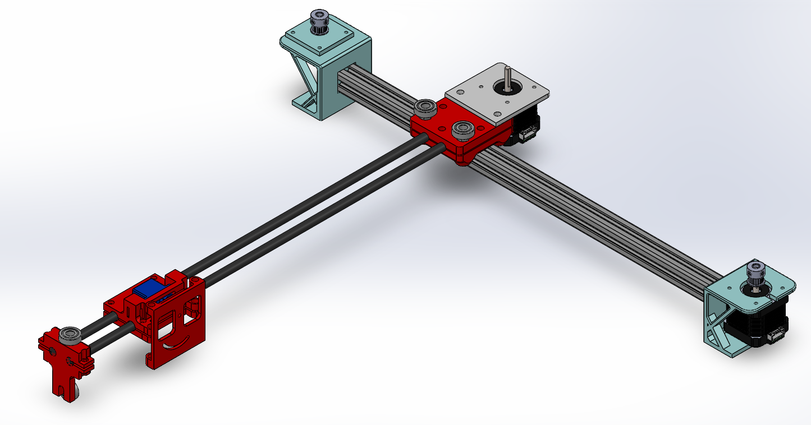October 2021
How to not build a pen CNC mill
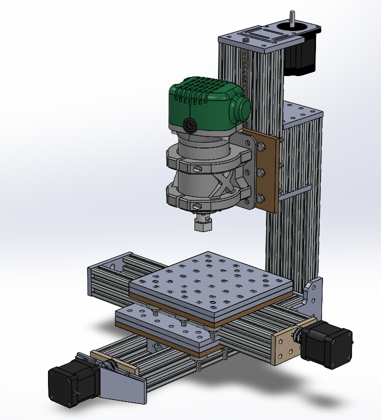July 2021
Barbell Holder
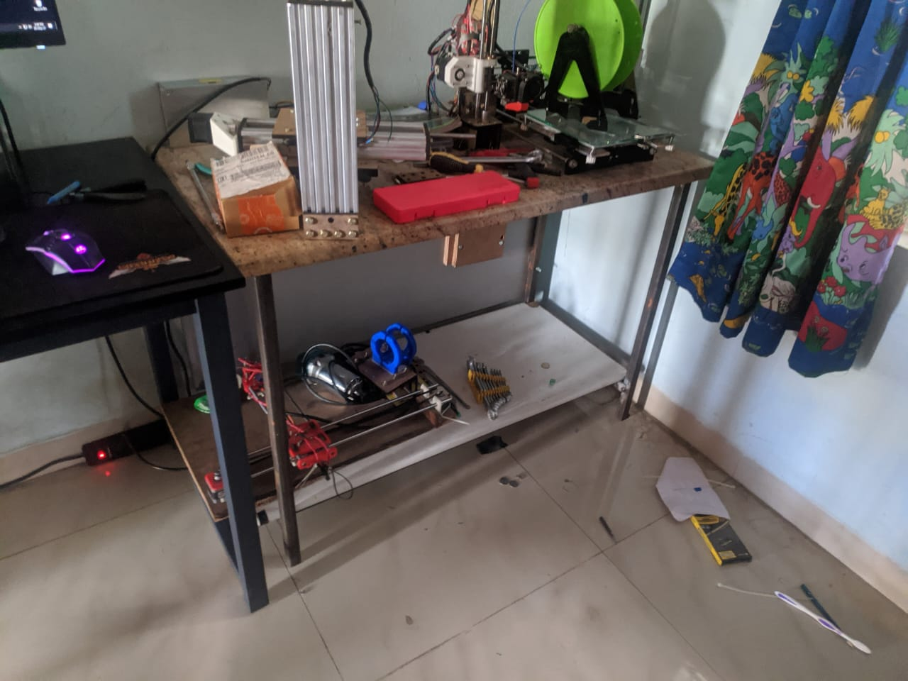I needed a second desk in my room for the 3d Printer and other stuff so, I decided it would be cheaper to build my own.
15 May 2021
Some fun pen plotter art
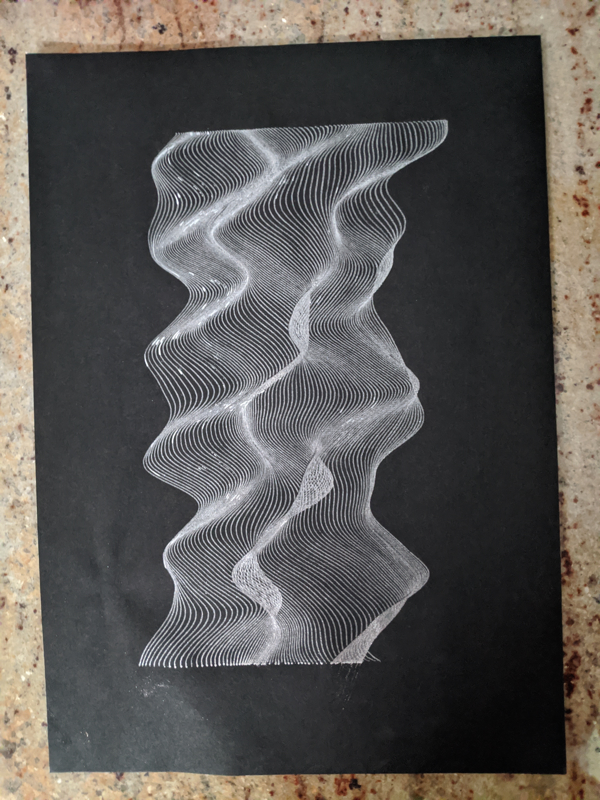June 2021
Barbell Holder
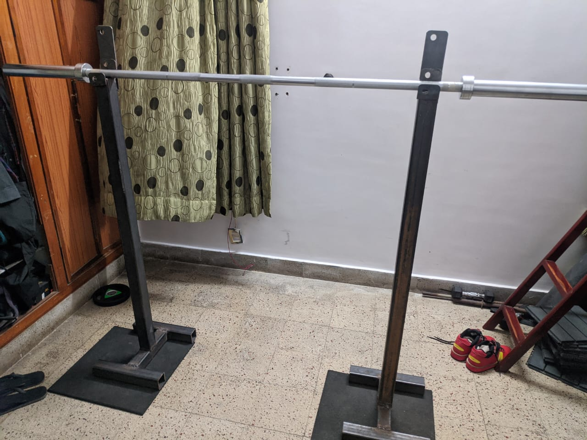When Covid peeked, we stopped going to the gym and also the subscription was about to end. After some quick calculation, we figured out it was cheaper to buy our own equipement rather than going to the gym
May 1 2021
What I did with the free prototyping service from the hackathon
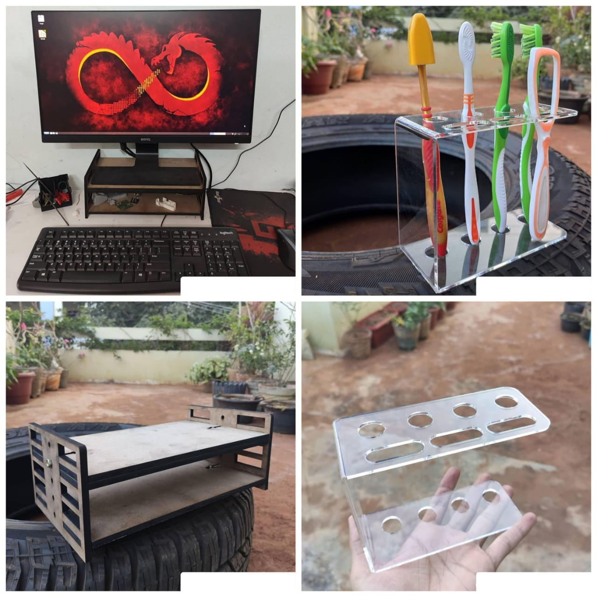A cool looking toothbrush holder and monitor stand for my PC.
14 December 2020
How a watch i designed got featured in the news
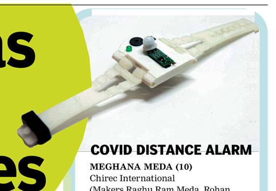My watch design was compact and looked aesthetic compared to other inventions in the make-athon. Although it didn't work as intended we had a great learning experience.
1 November 2020
3D scan of myself
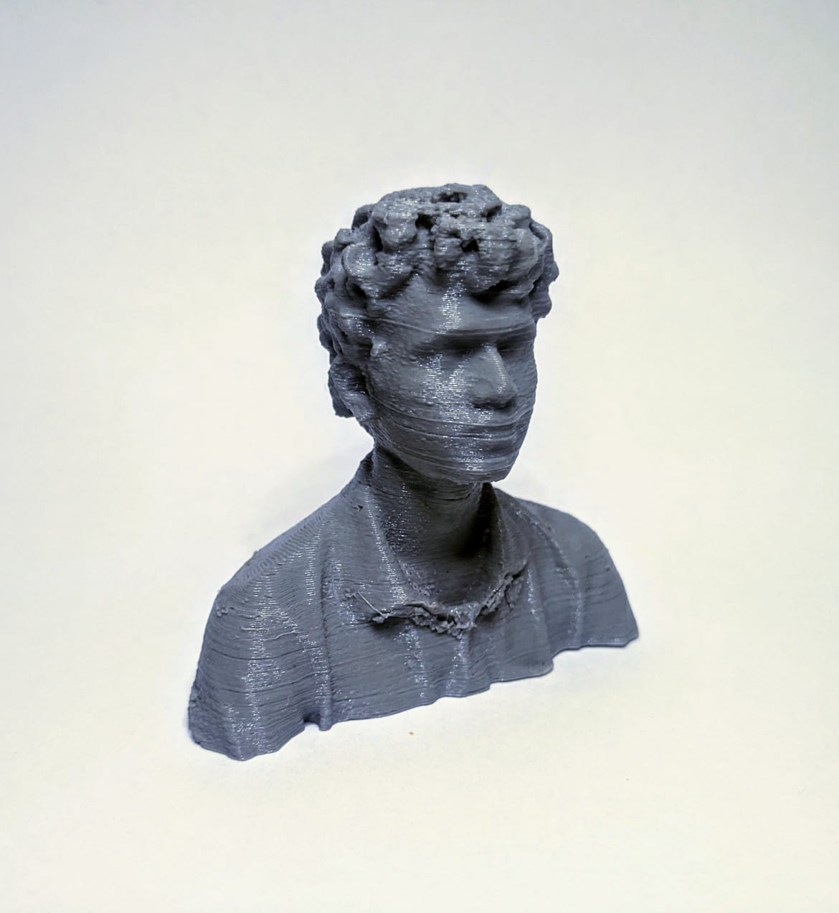I always wanted to have a 3d print of myself so I bought a used Kinect sensor for cheap and then scanned myself using it.
14 September 2020
Homemade Go Kart

This is a go kart made by me and my friend during pandemic using a 2 stroke engine.
25 August 2020
Brushless fan
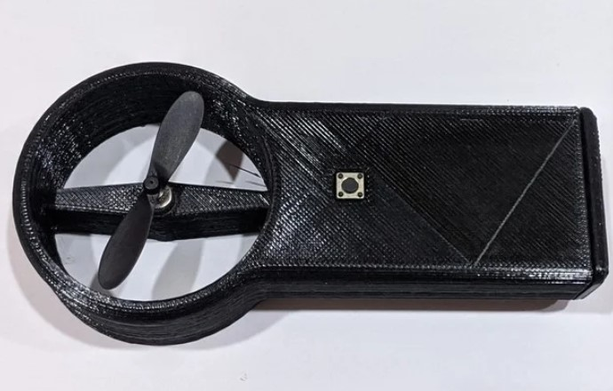
18 July 2020
A better key holder
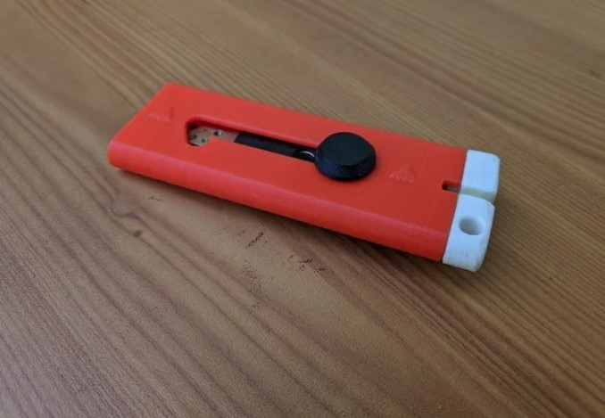
13 April 2020
3D Printed Pen Plotter

I made this pen plotter so I can write my lab notes with this for my engineering degree.
28 March 2020
Benelli lion keychain
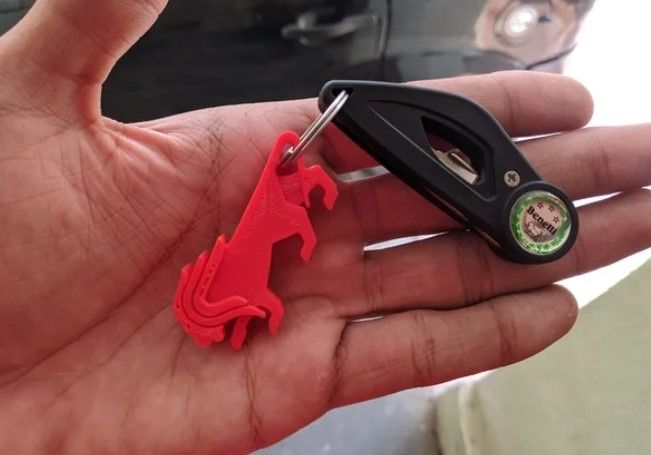